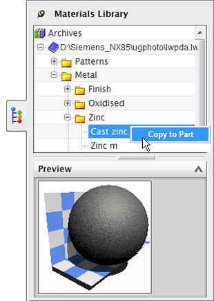
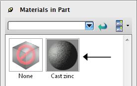
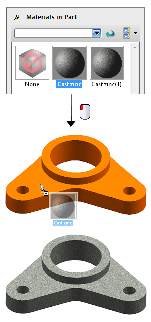

复制并应用系统材料
-
在视图工具条上，从渲染样式列表中选择艺术外观
 。
。大多数可视化命令的完整效果只在将渲染样式设为艺术外观
时可见。 -
在资源条上，单击系统材料
 。
。 -
从材料文件夹中选择一个材料，然后右击并选择复制到部件。

提示
要同时选择多个归档材料，使用 Shift 和 Ctrl 键，然后将它们复制到部件中的材料资源板中。
-
点击资源条上的部件中的材料
 选项卡。
选项卡。材料库中的材料将复制到您的部件中。

-
在部件中的材料资源板中，选择复制的材料缩略图，然后将它拖动到图形窗口中。

注释
您也可以先选择几何体，然后右击部件中的材料资源板中的材料缩略图并选择应用。